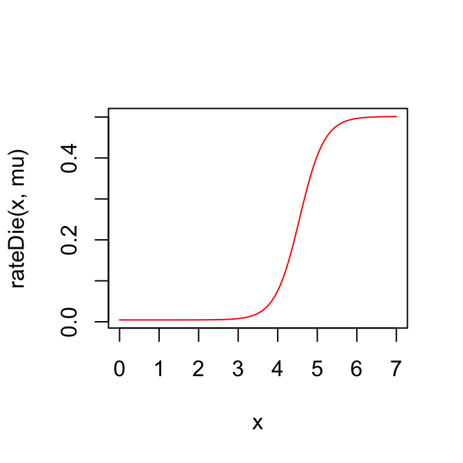

We set the numbers of different alleles for each quantitative trait locus (QTL) in the pathogen genotype. These are specified in the form of a integer vector with elements bigger or equal to 2. The length of this vector corresponds to the number of QTLs.
# numbers of alleles for each quantitative trait locus
numsAllelesAtSites <- c(3, 2)
# Define a matrix of the possible genotype encodings (as allele contents).
genotypes <- generateGenotypes(numsAllelesAtSites)
print(genotypes)## [,1] [,2]
## [1,] 1 1
## [2,] 1 2
## [3,] 2 1
## [4,] 2 2
## [5,] 3 1
## [6,] 3 2# Define the probability of the first infecting strain (the first pathogen strain starting the epidemic)
pg.init <- rep(0, nrow(genotypes))
pg.init[1] <- 1 # we specify that 1 is the first strain with probability 1.# number of host-types
n <- 6
# probability of each host type in a susceptible compartment
pe <- runif(n)
pe <- pe/sum(pe) # ensure that they sum-up to 1The GE-values represent the general genotype x host-type effects. A genotype x host-type effect is the mean trait value of an individual of a given host-type carrying a given pathogen strain in the absence of selection.
# General host-type x strain effects (expected phenotypes for genotype by environment combinations)
GEVs <- matrix(NA, nrow=n, ncol=nrow(genotypes))
# assign random values to each genotype x host-type combination:
for(g in 1:nrow(genotypes)) {
GEVs[, g] <- rnorm(n=n, mean=2+2/nrow(genotypes)*(g), sd=0.4)
}To get a visual idea of the different GE-values, we can plot them in the form of an R-matplot:
matplot(GEVs, type='l', lty=1, col=1:6)The final phenotype of every infected host is the sum of the GE-value for its currently infecting strain and a random host-specific effect. The toyepidemic package assumes that the host-specific effect is a normally distributed random variable drawn exactly once for each possible infecting strain in a newly infected host. This normal distribution has mean 0 and standard deviation defined by the following parameter \(\sigma_e\):
# is the special environmental effect unique for each pathogen genoetype in an individual
eUniqForEachG <- TRUE
sigmae <- .6
# it is possible to specify different standard deviations for the different host-types, i.e. different host-types exhibit stronger or weaker effect on the trait. For this example we keep them fixed for all host-types.
sde <- rep(sigmae, n)At the between-host level we start by defining the size, the birth- and the natural death rate in the population at equilibrium. These are constants:
#initial population size (equilibrium in the absence of disease)
N <- 1e5
# setting the between-host and within-host dynamics of the simulation:
# natural death rate
mu <- 1/850
# constant birth rate that maintains this equilibrium
nu <- ifelse(is.finite(N), mu*N, 0)Next, we define the rate parameters for infected hosts: ### Infected death-rate
# death-rate as a function of viral load and natural death rate mu
rateDie <- function(z, mu) {
V <- 10^z
Dmin <- 2
Dmax <- 25*12
D50 <- 10^3
Dk <- 1.4
(V^Dk+D50^Dk)/(Dmin*(V^Dk+D50^Dk)+((Dmax-Dmin)*D50^Dk)) + mu
}
curve(rateDie(x, mu), 0, 7, col="red")
We define a function rateMutate which calculates the within-host per-locus mutation rate for a number K of infected hosts. The function recieves the GEVs matrix as an argument and 3 vectors of length K as follows:
In addition, we specify the mode of within-host evolution (in this case - selection)
# per locus mutation rates
rateMutate <- function(GEValues, es, envs, genes) {
z <- GEValues[cbind(envs, genes)] + es
V <- 10^z
Mmin <- 0.00
Mmax <- 0.2
M50 <- 10^3
Mk <- 1.4
Mmin+(Mmax-Mmin)*V^Mk/(V^Mk+M50^Mk)
}
# are only beneficial (i.e. increasing the trait-value) mutations allowed
selectWithinHost <- TRUE# all events are sampled with this time-step. This means that only one event can happen for an infected host within every next interval of 0.05 (arbitrary time units).
timeStep <- 0.05
# maximum time before starting graceful fadeout of the epidemic (stop the
# transmission events and wait until no more infected hosts live in the population)
maxTime <- 200
# continue the epidemic outbreak until reaching maxNTips diagnosed hosts
maxNTips <- 1000
# time to continue the simulation of transmission after reaching maxNTips
# (this was introduced in order to study post-outbreak dynamics, i.e. epidemic
# waves after exhaustion of the susceptible pool)
expandTimeAfterMaxNTips <- 0To run the simulation we use the function simulateEpidemic with the parameters specified as above:
epidemic <- simulateEpidemic(
Ninit=N, nu=nu, mu=mu, pe=pe, sde=sde, pg.init=pg.init, GEValues=GEVs,
rateContact=1/6, rateInfect=rateInfect, rateDie=rateDie,
rateSample=rateSample,
rateMutate=rateMutate,
numsAllelesAtSites=numsAllelesAtSites, eUniqForEachG=eUniqForEachG,
selectWithinHost=TRUE,
timeStep=timeStep, maxTime=maxTime, maxNTips=maxNTips,
expandTimeAfterMaxNTips=expandTimeAfterMaxNTips,
process="select/select")Here we glimpse over some of the functions used in analyzing the simulated epidemic. A more elaborate analysis is provided in the vignette for the package patherit.
tree <- extractTree(epidemic)## Generating tree: nTips= 1000 , number of uncollapsed edges= 3393plot(ape::ladderize(tree), show.tip.label = FALSE)# extract the population of all sampled individuals
pop <- extractPop(epidemic, ids = tree$tip.label)
# calculate their phenotypic values at the moment of diagnosis
pop[, z:=calcValue(env, gene, e, GEValues = epidemic$GEValues)]
hist(pop[, z])drc1 <- extractDRCouples(epidemic)Apart from base R functionality, the toyepidemic package uses a number of 3rd party R-packages:
Dowle, Matt, and Arun Srinivasan. 2016. Data.table: Extension of ‘Data.frame‘. https://CRAN.R-project.org/package=data.table.
Eddelbuettel, Dirk, Romain Francois, JJ Allaire, Kevin Ushey, Qiang Kou, Nathan Russell, Douglas Bates, and John Chambers. 2017. Rcpp: Seamless R and C++ Integration. https://CRAN.R-project.org/package=Rcpp.
Paradis, Emmanuel, Simon Blomberg, Ben Bolker, Julien Claude, Hoa Sien Cuong, Richard Desper, Gilles Didier, et al. 2016. Ape: Analyses of Phylogenetics and Evolution. https://CRAN.R-project.org/package=ape.
Wickham, Hadley. 2016. Testthat: Unit Testing for R. https://CRAN.R-project.org/package=testthat.